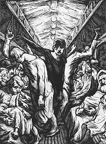
Karel Silovský: Elektrická tramvaj
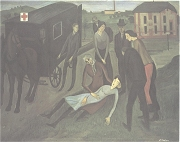
Karel Holan: Ambulance
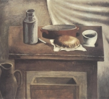
Bedřich Piskač: Zátiší s chlebem
|
LEVICOVÍ ROMANOPISCI
Levicoví spisovatelé se sdružovali v mnoha skupinách, především avantgardních. Někteří z nich se ale k avantgardně nehlásili a vyznávali socialistický realismus. Jeho podoba ovšem nebyla tak dogmatická jako v Sovětském svazu, kde se stal oficiálním nástrojem propagandy. Autoři se soustředili na sociální témata, osudy dělníků nebo život ve městech.
Levicově smýšlející umělci a intelektuálové se roku 1929 sdružili v Levé frontě. Zakládajícími členy byli především avantgardní tvůrci, ale jejich řady brzy rozšířili další umělci. V jejím čele stál Neumann a později Zdeněk Nejedlý. Levá fronta vydávala stejnojmenný časopis a měla i vlastní nakladatelství. Levicoví umělci dostávali prostor v komunistickém deníku Rudé právo, kde pracoval Fučík nebo Olbracht. Většina z nich opakovaně navštívila Sovětský svaz, ale pouze Weil dokázal podat objektivní obraz zdejšího totalitního režimu.
Přímo k socialistickému realismu se hlásili členové sdružení Blok (1935-1938), které vedl marxistický kritik Bedřich Václavek. Patřil sem Weil, Olbracht, Majerová nebo Pujmanová. V redakci jejich časopisu U (1936-1939) působil kritik Ladislav Štoll.
Ve výtvarném umění reprezentovala levicový proud Sociální skupina, jejíž původní název zněl Ho Ho Ko Ko, podle počátečních písmen příjmení malířů Holana, Holého, Kotrby a Kotíka. Jejich tvorba měla blízko k realismu, ale byla tendenční až agitační.
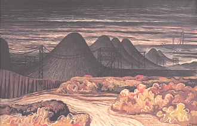
Jan Zrzavý: Haldy večer
|
Levicoví spisovatelé a KSČ
Většina levicových spisovatelů vstoupila do Komunistické strany Československa, hlásila se k marxistickému světovému názoru a podporovala bolševický převrat v Rusku i Lenina. Spory nastaly až kolem osoby Stalina, když se ve 30. letech objevily informace o vykonstruovaných politických procesech. V Československu ovšem nastala první krize už roku 1929, kdy se do čela KSČ dostal Klement Gottwald. Spisovatelé, kteří proti bolševizaci strany protestovali, byli z KSČ vyloučeni – Neumann, Hora, Seifert, Vančura, Olbracht, Malířová, Majerová. KSČ zneužívala naivitu, idealismus, smysl pro sociální spravedlnost, radikálnost a hlavně talent levicových umělců pro svou vlastní propagaci. Když se komunisté roku 1948 chopili moci, vypořádali se se všemi tvůrci, kteří nehodlali v propagandistické tvorbě pokračovat.
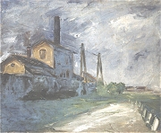
Zdenek Rykr: Továrna
|
Ivan Olbracht (1882-1952)
Kamil Zeman se narodil v Semilech a zemřel v Praze. Jeho družkou byla Helena Malířová, otec psal pod pseudonymem Antal Stašek. Olbracht přispíval do levicových deníků a pracoval v Rudém právu. Za své názory byl opakovaně vězněn. Roku 1929 byl vyloučen z KSČ. V duchu socialistického realismu napsal román Anna proletářka. Ostatní knihy mají blízko k psychologické próze – O zlých samotářích, Žalář nejtemnější, Podivné přátelství herce Jesenia, Zamřížované zrcadlo. Život ortodoxních židů zachytil v knize Golet v údolí (O smutných očích Hany Karadžičové). Jeho vrcholným dílem je román Nikola Šuhaj loupežník.
V době protektorátu vytvořil parafráze Čtení z Biblí Kralické, Ze starých letopisů nebo O mudrci Bidpajovi a jeho zvířátkách.
|
Ivan Olbracht: Nikola Šuhaj loupežník
Ve 30. letech pobýval Olbracht na Podkarpatské Rusi. Z tohoto prostřední čerpá jeho příběh o loupežníkovi, v němž se skutečnost postupně mění v lidovou pověst. Nikola Šuhaj je vojenský zběh, který se ukrývá před četníky v lesích nedaleko rodné Koločavy. Bohatým bere a chudým dává. Bouří se proti cizí vrchnosti – Maďarům, Rumunům i Čechům. Četníci jsou na něho krátcí – uprchne z vězení a jejich střely mu jako zázrakem neublíží. Nakonec ho ale zradí místní lidé a Šuhaj umírá pod jejich sekerami.
Šuhaj skutečně žil, ale v Olbrachtově podání splývají jeho osudy s pověstí o místním zbojníkovi jeménem Oleksa Dovbuš, kterému se vyhnula každá střela. Olbrachtova oslava zbojnictví vyvolala velký odpor a kritika knihu odsoudila.
|
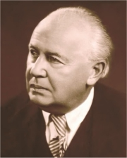
Převyprávěj děj ukázky vlastními slovy.
Charakterizuj jednotlivé postavy. Srovnej jejich jazyk s jazykem vypravěče.
Kdo je autorem divadelní adaptace Olbrachtovy knihy s názvem Balada pro banditu?
Které další zbojníky znáš? Co o nich víš?
Která díla se rovněž odehrávají na Podkarpatské Rusi?
|
Marie Pujmanová (1893-1958)
Pujmanová se narodila i zemřela v Praze. Byla žačkou F.X.Šaldy. Po osvobození působila jako komunistická funkcionářka. Její syn se neúspěšně pokusil o emigraci.
V duchu socialistického realismu vznikla románová trilogie Lidé na křižovatce, Hra s ohněm a Život proti smrti. Další prózy jsou spíše psychologické – Pod křídly, Pacientka doktora Hegla, Předtucha.
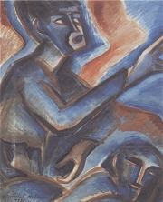
Vlastislav Hofman: Stávka
|
Marie Pujmanová: Lidé na křižovatce
V románu Lidé na křižovatce se prolínají osudy dvou rodin – nemajetných Urbanů a bohatších Gamzů. Sourozenci Ondřej a Růžena Urbanovi se po smrti otce stěhují s matkou do Prahy. Bydlí vedle advokáta chudých Gamzy a jeho dětí Stanislava a Heleny. Ondřej nastoupí do Kazmarovy továrny v Úlech, v níž lze rozpoznat Baťův Zlín. Zprvu nadšeně podporuje svého zaměstnavatele, ale postupně zjišťuje, že mu nejde o lidi, ale jen o peníze. Nakonec je vyhozen z práce, když se zastane propuštěné ženy.
Další osudy postav můžeme sledovat v románu Hra s ohněm, jehož pozadí tvoří politický proces po zinscenovaném požáru říšského sněmu v Německu, a Život proti smrti, ve kterém umělecké kvality ustupují schematičnosti a komunistické propagandě.
|
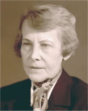
Charakterizuj advokáta Gamzu.
Jaké jazykové prostředky Gamza využívá? Co je jeho cílem?
Najdi v Gamzových slovech příklady ideologie, manipulace a nepravd.
Je Gamza sám zmanipulovaný? Svůj názor zdůvodni a dolož prostřednictvím citátů z knihy.
Které novinky vnesl Baťa do podnikání? Co vyráběly jeho závody? Co si o Baťovi myslíš?
Proč zaměstnanci stávkují? Mají na to právo?
|
Jiří Weil (1900-1959)
Weilovým rodištěm byly Praskolesy u Hořovic, zemřel v Praze. Vystudoval slovanskou filologii, pracoval v tiskovém oddělení sovětské mise v Praze a roku 1933 byl povolán do Moskvy, kde překládal pro nakladatelství Kominterny marxisticko-leninskou literaturu. Na vlastní kůži zažil politické procesy, byl vyloučen z komunistické strany a za trest byl poslán do střední Asie. Po návratu do Československa napsal knihy Češi stavějí v zemi pětiletek, Moskva–hranice nebo Dřevěná lžíce. Za protektorátu odmítl nastoupit do transportu a musel se skrývat. Po válce psal knihy se židovskou tematikou – Život s hvězdou, Harfeník, Na střeše je Mendelssohn a Žalozpěv za 77297 obětí. Je také autorem románu o lžiprorokovi Makanna, otec divů.
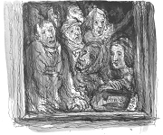
Karel Fleischmann: Čekání na deportaci (Terezín, 1943)
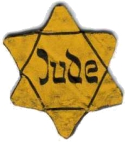
Hvězda, kterou museli židé nosit na oblečení v době okupace
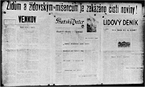
Vývěska informující Židy o zákazu číst noviny
|
Jiří Weil: Moskva–hranice
Román Moskva–hranice tvoří tři části, které nesou jména hlavních hrdinů. Ri následuje svého manžela do Moskvy, ale v cizím městě se jí vůbec nelíbí. Postupně se sžívá se zdejšími lidmi, začne pracovat v továrně a stává se z ní nadšená budovatelka. Komunistický novinář Jan Fischer naopak ztrácí iluze o sovětském režimu. Snaží se pomoci příteli Herzogovi, který ze dne na den zmizel. Musí tajně odvézt důležité dokumenty do Německa, kde prý měl Rudolf Herzog utajené poslání, při němž byl zatčen. V Rusku mezitím propukl vykonstruovaný proces se Zinověvem. Následné čistky dopadají i na Fischera. Je propuštěn z práce a vyloučen ze strany. Jeho přítel Herzog umírá.
Román Moskva–hranice způsobil velký rozruch, protože překvapivě otevřeně líčil skutečné poměry v Sovětském svazu, přestože byl jeho autorem levicově orientovaný spisovatel. V mnohém šlo o autobiografické dílo, protože i Weil pracoval tři roky v Rusku. Za kritický dopis domů byl ale vyloučen z tamější komunistické strany a poslán na převýchovu do Kazachstánu! Volné pokračování románu nazvané Dřevěná lžíce stáhl Weil z vydání, oficiálně vyšlo až roku 1992.
Jiří Weil: Život s hvězdou
Hlavní postavou románu Život s hvězdou je Josef Roubíček. Nevýrazný, spíše pasivní člověk byl podle protektorátních zákonů označen za Žida. Omezení, která z toho plynou, ho vrhají do ještě větší izolace. Reálný svět mu splývá s představami. Vede rozhovory s nepřítomnými lidmi, především dávnou láskou Růženou, a svým kocourem Tomášem. Když se dozví, že Růžena zemřela, přestane se podvolovat osudu a rozhodne se nenastoupit do transportu.
Existenciální atmosférou je Život s hvězdou blízký dílům Franze Kafky. Také tento román má autobiografické rysy. Weil byl označen za Žida. Stihl ještě uzavřít poslední smíšené manželství s „Árijkou" v protektorátu. Měl nastoupit do transportu, ale po fingované sebevraždě se až do konce války ukrýval. Weilův román vyšel roku 1949. Komunistická kritika dílo odsoudila.
|
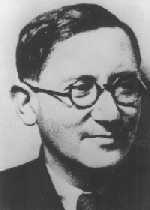
Popiš situaci v sovětském Rusku po atentátu na Kirova.
Charakterizuj jednotlivé postavy v ukázce.
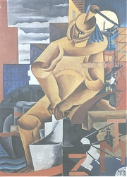
František Foltýn: Imperialismus
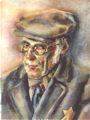
Ludvík Wodak: Portrét muže v čapce a brýlích (Terezín, 1943)
Jakým zákazům se museli podvolit Židé v protektorátu?
Charakterizuj postavy strýce a tety.
Co si myslíš o Roubíčkovi?
|
Julius Fučík (1903-1943)
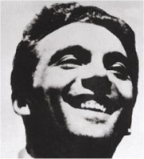
Fučík se narodil v Praze, popraven byl v Berlíně. Tento komunistický novinář byl redaktorem Rudého práva. Šalda mu roku 1928 předal svůj časopis Tvorba. Ve 30. letech pobýval Fučík v SSSR. Za protektorátu odešel do ilegality a účastnil se protifašistického odboje. V dubnu 1942 byl zatčen gestapem. Po dlouhém vyslýchání v pankráckém vězení byl odsouzen k trestu smrti a popraven. Je autorem knih V zemi, kde zítra již znamená včera a Reportáž psaná na oprátce.
|
Julius Fučík: Reportáž psaná na oprátce
Reportáž psaná na oprátce je tvořena 167 motáky, které Fučík psal v pankrácké věznici. Z vězení je tajně vynášel jeden z dozorců. První moták obsahuje pouze název díla. Další popisují Fučíkovo zatčení gestapem, jeho činnost v ilegální komunistické straně a věznění. Autor popisuje své přátele, spoluvězně i vyšetřovatele. Sám sebe líčí jako hrdinu, který hraje s vězniteli odvážnou hru.
Reportáž psaná na oprátce mohla vyjít až po válce. Vydala ji Fučíkova manželka Gusta, která knihu částečně cenzurovala, aby lépe vyhovovala ideální představě o Fučíkovi. Komunističtí ideologové cíleně budovali Fučíkův kult. Tento člen KSČ byl prezentován jako národní hrdina, který obětoval svůj život v boji proti fašismu. Ferdinand Peroutka, který byl také vězněn na Pankráci, ale tvrdil, že vězňové si předávali vzkaz „Pozor na Fučíka!“. V úplné podobě vyšla kniha až roku 1995.
Další autoři a jejich díla
Marie Majerová: Siréna, Přehrada, Havířská balada
T. Svatopluk: Botostroj, Andělé úspěchu
|
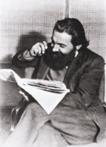
V ilegalitě Fučík vystupoval pod krycím jménem profesor Horák.
Co je moták?
O čem vypovídají pasáže (v ukázce jsou označeny tučně) vynechané v oficiálním vydání Fučíkovy knihy?
Proč byly cenzurovány?
Co si myslíš o Fučíkovi?
|
Internetové stránky
Olbracht: Žalář nejtemnější
Puchriková: Mikuláš Konáč z Hodiškova a Ivan Olbracht
Pujmanová
Weil
Pečinka: Julius Fučík, článek
Fučík
Levá fronta, časopis
Filmy
Balada pro banditu, režie V.Sís
Exkurze
Blahuš: Koločava, článek
Zlín, Baťovy domky
|
Doporučená četba
Blahynka, Milan: Marie Pujmanová, Praha 1961
Fučík, Julius: Reportáž psaná na oprátce, První úplné, kritické a komentované vydání, Torst, Praha 1995
Hájek, Jiří: Marie Majerová aneb Román a doba, Praha 1982
Hanuš, Jiří: Malý slovník osobností českého katolicismu 20. století, CDK, Praha 2005
Hnízdo, Vladislav: Ivan Olbracht, Melantrich, Praha 1977
Nejedlá, Jaromíra: Marie Majerová, Melantrich, Praha 1986
Olbracht, Ivan: Pověsti a bajky, ČSS, Praha 1955
Olbracht, I.: Spisy (13 svazků)
Olbracht, I.: Zakarpatská trilogie, Svoboda, Praha 1971
Pfaff, Ivan: Česká levice proti Moskvě 1936-1938, Praha 1993
Píša, Antonín Matěj: Ivan Olbracht, Praha 1982
Pujmanová, Marie: Lidé na křižovatce, ČSS, Praha 1983
Pujmanová, M.: Vyznání a úvahy, Praha 1959
Ransdorf, Miloslav: Zdeněk Nejedlý, Praha 1988
Štoll, Ladislav: Z bojů na levé frontě, Praha 1964
Václavek, Bedřich: Tvorba a společnost, Praha 1961
Weil, Jiří: Dřevěná lžíce, Mladá fronta, Praha 1992
Weil, J.: Moskva–hranice, Mladá fronta, Praha 1991
Weil, J.: Vzpomínky na Julia Fučíka, Praha 1947
Weil, J.: Život s hvězdou, Na střeše je Mendelssohn, Žalozpěv za 77297 obětí, NLN, Praha 1999
|
Vypracuj písemný referát o některé z uvedených knih.
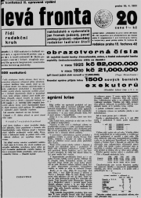
Časopis Levá fronta
|
|